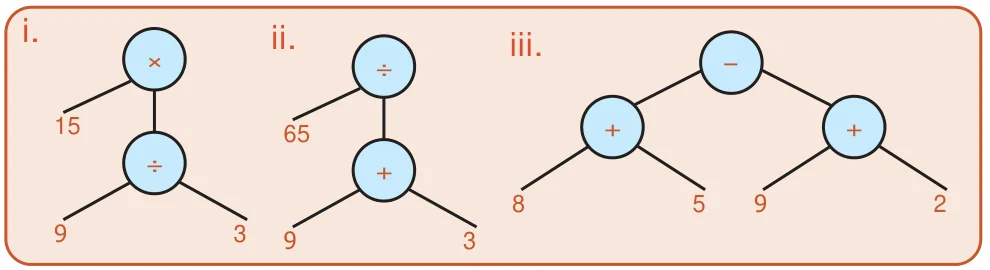
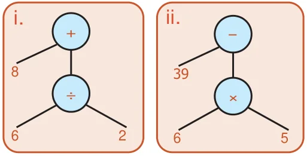
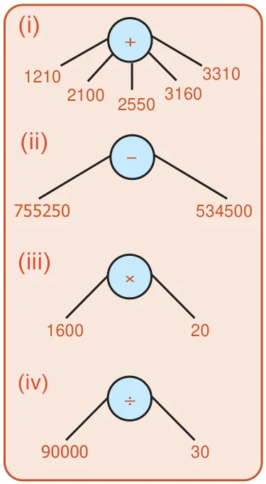
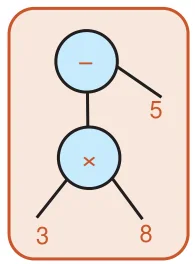
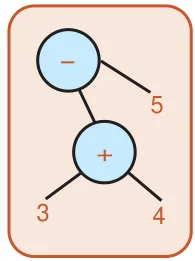

Chapter 1 Numbers
Exercise 1.1
1. i) 12 ii) 31 iii) 3 iv) 2 v) 10
2. i) False ii) False iii) True iv) True v) True
3. smallest \(\to 11\); biggest \(\to 97\)
4. smallest \(\to 100\); biggest \(\to 999\)
5. True. \(3+7+9 = 19\) is odd
6. (17, 71), (37, 73) & (79, 97)
7. False. 9 is odd number but not prime
8. True. The composite number 4 has 3 factors namely 1, 2, and 4.
9. 6, 12, 18, 24, 30 (excluding February)
10. 19
11.
a) \(60 = 2 \times 2 \times 3 \times 5\)
b) \(128 = 2 \times 2 \times 2 \times 2 \times 2 \times 2 \times 2\)
c) \(144 = 2 \times 2 \times 2 \times 2 \times 3 \times 3\)
d) \(198 = 2 \times 3 \times 3 \times 11\)
e) \(420 = 2 \times 2 \times 3 \times 5 \times 7\)
f) \(999 = 3 \times 3 \times 3 \times 37\)
12. (11, 13) or (13, 11)
Objective Type Questions
13. b) 2 14. c) 2 15. b) 92 16. c) 40 17. a) 80 18. d) impossible 19. a) 2 20. d) all of these
Exercise 1.2
1. i) 15 ii) 2 iii) 3 iv) 156 v) 3
2. i) False ii) True iii) True iv) False v) True
3. i) 6 ii) 17 iii) 1 iv) 12 v) 9 vi) 5
4. i) 18 ii) 24 iii) 30 iv) 42 v) 120 vi) 75
5. HCF \(\to 22\); LCM \(\to 18018\)
6. HCF = 20 litres
7. After 360 seconds (6 min), at 8.06 a.m
8. 2 pairs possible
9. 24
Objective Type Questions
10. c) 71, 81 11. d) 9936 12. b) 36 13. c) 80
Exercise 1.3
1. \(4 = 2 + 2\); \(6 = 3 + 3\); \(8 = 3 + 5\); \(10 = 3 + 7\) (or) \(5 + 5\); \(12 = 5 + 7\); \(14 = 7 + 7\) (or) \(3 + 11\); \(16 = 5 + 11\) (or) \(3 + 13\)
2. Yes, because it has only two factors.
3. For \(n = 2, 3, 4, 6\) and 7
4. a) False, 3 is a factor of 9 b) True, 12 is a multiple of 6
5. i) 8 ii) 0 iii) 9 iv) 1 v) 8
6. False. 12 is divisible by both 4 and 6 but not by 24
7. True. \(17+19=36\) is divisible by 4
8. 40 cm
Challenge problems
9. 2, 37, 41
10. 11, 13, 17, 19; The sum 60 is divisible by 1, 2, 3, 4, 5 and 6 but not divisible by 7, 8 and 9
11. 2520
12. Yes. \(2 \times 3 \times 4=24\) is divisible by 6.
13. Once in 30 days, \(31^{\text{st}}\) October
14. The lifts will stop at floors 15, 30, 45, 60, 75, 90 and 105
15. (15, 20)
16. Yes. Since it is divisible by both 8 and 11 and hence by 88
17. After 60 minutes, at 8 a.m

5. Profit = ₹15
6. Loss = ₹40
7. No Profit / Loss
8. S.P. = ₹8,75,000
9. C.P. = ₹25,000
10. Discount = ₹295
11. M.P. = ₹1850
12. Discount = ₹25
13. S.P = ₹3
14. Loss = ₹5585
Objective Type Questions
15. (a) M.P. 16. (b) C.P 17. (a) C.P = S.P 18. (b) S.P
Exercise 3.2
1. Gain = ₹15
2. Loss = ₹50
3. Profit = ₹200
4. Profit = ₹1,00,000
5. Gain = ₹32
6. M.P. = ₹29
7. Profit = ₹960
8. Profit = ₹3000
Chapter 4 Geometry
Exercise 4.1
1. a) two b) scalene triangle c) two d) \(180^{\circ}\) e) isosceles right angled triangle
2. i) Scalene triangle ii) Right angled triangle iii) Obtuse angled triangle iv) Isosceles triangle v) Equilateral triangle
3. a) \(\overline{AB}, \overline{BC}, \overline{CA}\) b) \(\angle ABC, \angle BCA, \angle CAB\) or \(\angle A, \angle B, \angle C\) c) A, B, C
4. i) Equilateral triangle ii) Scalene triangle iii) Isosceles triangle iv) Scalene triangle
5. i) Acute angled triangle ii) Right angled triangle iii) Obtuse angled triangle iv) Acute angled triangle
6. i) a) Isosceles Acute angled triangle
ii) a) Scalene Right -angled triangle
iii) a) Isosceles Obtuse angled triangle
iv) a) Isosceles Right -angled triangle
v) a) Equilateral Acute angled triangle
vi) a) Scalene Obtuse angled triangle
7. i) Yes, Scalene triangle
ii) Yes, Scalene triangle
iii) No, The triangle cannot be formed
iv) Yes, Isosceles triangle
v) Yes, Equilateral triangle
vi) No, The triangle cannot be formed
8. i) Yes, Acute angled triangle
ii) Yes, Right angled triangle
iii) No, The triangle cannot be formed
iv) No, The triangle cannot be formed
v) Yes, Acute angled triangle
vi) Yes, Obtuse angled triangle
9. i) \(40^{\circ}\) ii) \(70^{\circ}\) iii) \(60^{\circ}\) iv) \(40^{\circ}\) v) \(30^{\circ}\) vi) \(40^{\circ}\)
10. Equilateral Triangle
11. ii) Acute angled triangle, Isosceles triangle
iii) Right angled triangle, Isosceles triangle
iv) Acute angled triangle, Scalene triangle
v) Acute angled triangle, Scalene triangle
vi) Right angled triangle, Scalene triangle
vii) Obtuse angled triangle, Scalene triangle
viii) Obtuse angled triangle, Isosceles triangle
Objective Type Questions
12. b 13. d 14. a 15. d 16. c
Exercise 4.3
1. \(90^{\circ}, 45^{\circ}, 45^{\circ}\) 2. c
3. c 4. \(28^{\circ}, 28^{\circ}\)
5. Both are Isosceles Right angled triangles
6. Yes 7. No, A triangle cannot have more than one right angle
8. “a” is true, because an isosceles triangle need not have three equal sides
9. \(70^{\circ}, 40^{\circ}\) or \(55^{\circ}, 55^{\circ}\) 10. c
11. a) \(\triangle ABC\) b) \(\triangle ABC\), \(\triangle AEF\)
c) \(\triangle AEB\), \(\triangle AED\), \(\triangle ADF\), \(\triangle AFC\), \(\triangle ABD\), \(\triangle ADC\), \(\triangle ABF\), \(\triangle AEC\)
d) \(\triangle ABC\), \(\triangle AEF\), \(\triangle ABF\), \(\triangle AEC\)
e) \(\triangle AEB\), \(\triangle AFC\)
f) \(\triangle ADB\), \(\triangle ADC\), \(\triangle ADE\), \(\triangle ADF\)
12. (i) between 3 and 11 (ii) between 0 and 16 (iii) between 4 and 11 (iv) between 4 and 24
13. i. Always acute angles ii. Acute angle iii. Obtuse angle
Chapter 5 Information Processing
Exercise 5.1
1)

2) i. \(9 \times 8\) ii. \((7+6) - 5\) iii. \((8+2) - (6+1)\) iv. \((5 \times 6) - (10 \div 2)\)
3)

4) Algebraic expression
(i) \(p+q\) (ii) \(l-m\) (iii) \(ab-c\) (iv) \((a+b)-(c+d)\) (v) \((8 \div a)+[(b \div 4) + 3]\)
Exercise 5.2
1)

2)

3) Not equal
4)

6) \((3 \times 8) - 5 = 19\)

7)
